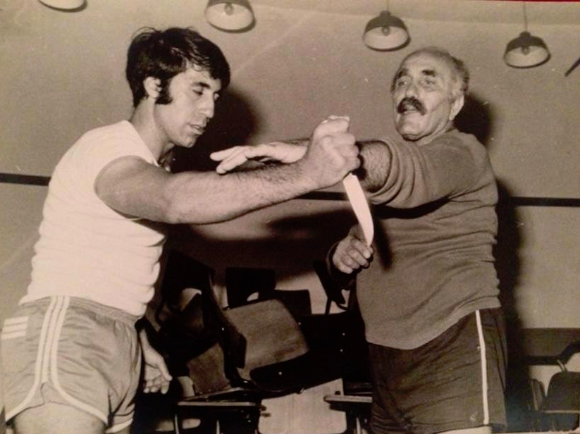

Historia del Krav Maga
El Krav Maga es un sistema de defensa personal desarrollado en los años 40 por Imi
Lichtenfeld.
Fue creado para entrenar al ejercito israelí y posteriormente adapatado al ambito civil, policial y militar.

Su pricipal objetivo es enseñar a defenderse de ataques reales, de forma rápida y eficaz, sin tecnicas
deportivas ni reglas.
Pricipios fundamentales
- Defender y contraatacar simultáneamente
- Neutralizar la amenaza lo mas rápido posible
- Usar reflejos naturales del cuerpo
- Proteger al alumno y al compañero
Entrenamiento en Cantabria
En Krav Maga Cantabria se ofrecen clases para todos los niveles: principiantes, intermedios
y avanzados.
Se trabaja en grupos reducidos, con atenció personalizada y ejercicios basados en situaciones reales.
Disciplinas disponibles:
- Krav Maga civil
- Krav Maga policial
- Krav Maga femenino

Horarios y tarifas
A continuación se muestran los horarios y precios de las clases semanales:
| Día |
Horario |
Nivel |
Precio mensual (€) |
| Lunes y miércoles |
19:00 - 20:30 |
Iniciación |
35 |
| Martes y jueves |
20:00 - 21:30 |
Avanzado |
40 |
| Sábado |
10:00 - 12:00 |
Mixto |
25 |
Formulario de contacto
Si deseas mas información o una classe de prueba, rellena el siguiente formulario: